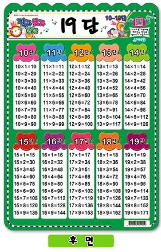

<!DOCTYPE html>
<html lang="en">
<head>
    <meta charset="UTF-8">
    <meta http-equiv="X-UA-Compatible" content="IE=edge">
    <meta name="viewport" content="width=device-width, initial-scale=1.0">
    <title>Document</title>


    <script>

      var block = prompt("1.정사각형 2.직각사각형 3.원형 4.도라에몽 5.구구단"); //조건 1 . 도형을 입력 받는 다  // 
      if (block === "도라에몽") {
      document.write('')// 도라에몽을 입력 하면 도라에몽 이미지만 보이기!//
      } else if(block === "구구단") {
      document.write('') // 이미지를 입력 했을 때 이미지 띄우기 끝에 else 로 
    
      } else {

   
    

       // //
      

      var backgroundColor = prompt("색깔을 입력하세요: 빨강, 노랑, 파랑, 핑크"); // 조건 2. 색깔을 입력 받는다 //
      var width =""; // 너비
      var height=""; // 높이  
      // if 문 각각의 영역 이 아닌 if문 전체의  width , height 라는 변수를 사용하기 위해 변수를 설정  // 
      var shape = ""; // 원형 스타일을 저장할 변수 
    
      if (block === "원형") { // 2023년 6월 10일 토요일 오전 12시 10분 어려운  문제를 드디어 풀게 되었다   //
        var radius = prompt("반지름을 입력하세요 (100px 이상):");
        shape = 'width:' + (2 * radius) + 'px; height:' + (2 * radius) + 'px; border-radius: 100%;';  // 높이 , 너비 같아야 되고 radius 에 대한 값에서 *2 를 해줘야 되고 , border radius 를 적용 //
      } else if (block === "정사각형") { // 정사각형을 입력 받기//
        width = prompt("너비를 입력하세요 (100px 이상):"); // 너비 입력 받기 //
        height = width;   // 너비는 높이와 같아야 한다 //
      } else if (block === "직각사각형") {  // 직각사각형은 너비랑 높이를 따로 입력 받아야 되기 때문에 2개의 Prompt 를 사용 한다 //
        width = prompt("너비를 입력하세요 (100px 이상):"); //너비 //
        height = prompt("높이를 입력하세요 (100px 이상):"); //높이 //
      } 
    }
  
      // backgroundColor Document 에 출력 되는 것  shape=> 원형을 입력 했을 때의 스타일//
      // 2023 . 06 . 10 . 오전 12시 14분 shape 함수 추가 // 
      // background color 에 의해서 출력// 

      // 큰 따옴표 안에 작은 따옴표로 스타일 구분 //

      if (backgroundColor === "빨강") {
        document.write('<div class="빨강" style="' + shape + ' width:' + width + '; height:' + height + ';"></div>');
      } else if (backgroundColor === "노랑") {
        document.write('<div class="노랑" style="' + shape + ' width:' + width + '; height:' + height + ';"></div>');
      } else if (backgroundColor === "파랑") {
        document.write('<div class="파랑" style="' + shape + ' width:' + width + '; height:' + height + ';"></div>');
      } else if (backgroundColor === "핑크") {
        document.write('<div class="핑크" style="' + shape + ' width:' + width + '; height:' + height + ';"></div>');
      }
    </script>
    

      <!---   style  여기서 굉장히 낚시를 당함 ,,,,  여기에서 border-radius:100%를 추가해야 되는 지 엄청 고민 했었음 
        근데 전혀 아니였음    
        
        border-radius:100% 스타일 속성은 위에 
        var radius = prompt("반지름을 입력하세요 (100px 이상):");
        shape = 'width:' + (2 * radius) + 'px; height:' + (2 * radius) + 'px; border-radius: 100%;'; 
        이 속성으로 들어가게 되서 
        스타일에 따로 추가 안해도 된 거 였음
        -->      

    <style>
      .빨강 { background: red; width: 1000px; height: 1000px; }
      .노랑 { background: yellow; width: 1000px; height: 1000px; }
      .파랑 { background: blue; width: 1000px; height: 1000px; }
      .핑크 { background: pink; width: 1000px; height: 1000px; }
      </style>
      
      
        

</head>
<body>
    
</body>
</html>